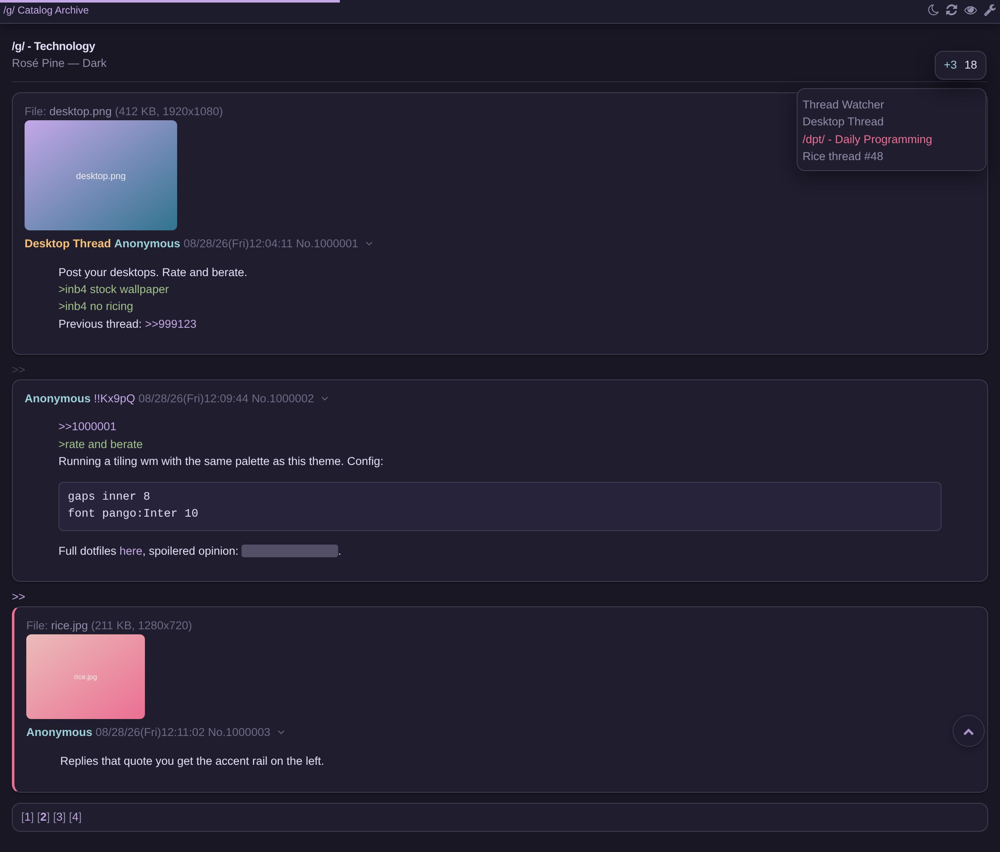
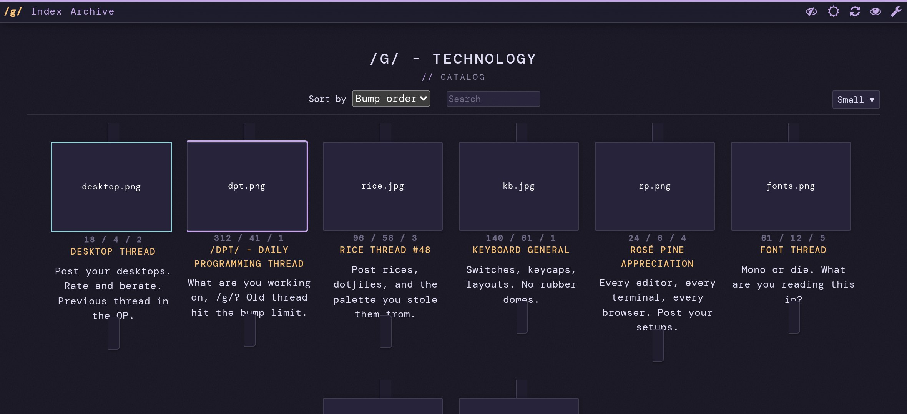
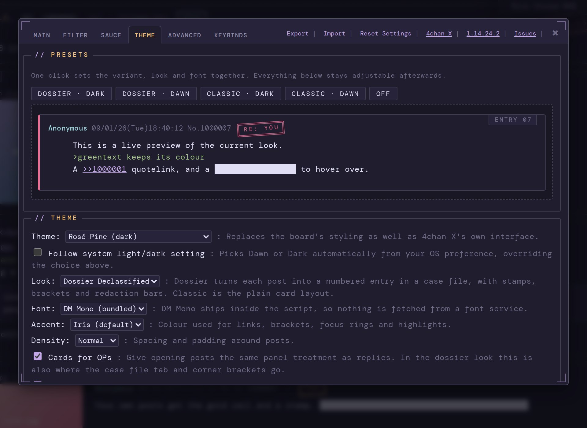

Built on 4chan X, it restyles the whole board — not just the script's own dialogs — in both Rosé Pine variants, with an optional animation layer and a few navigation extras.

The themes are off until you pick one in the new Theme tab. Three additions do start on — the motion layer, smooth scrolling and the back-to-top button — and they apply whether or not a theme is selected. Untick Animations, Smooth Scrolling and Scroll to Top in the same tab for stock behaviour.
Rosé Pine Dawn and Rosé Pine Dark, straight from the upstream palette. One click in the header flips between them.
Optionally track your OS light/dark setting and switch itself when your desktop does.
Posts, greentext, quotes, files, code blocks, the catalog and pagination — not only 4chan X's own panels.
New posts fade in, menus and dialogs ease open, thumbnails lift on hover. Three speeds, and it honours prefers-reduced-motion.
Six accent colours, three density levels, rounded or square corners, a modern font stack, and optional background blur.
A back-to-top button, a reading progress bar, and smooth scrolling — each independently switchable.
The theme reaches every surface 4chan X draws.


Upstream Rosé Pine values, with one deliberate exception noted below.
#ea9d34 measures 2.05:1 against its
cream background — unreadable as text. Post subjects and section headings use a deepened gold
(#9a6a16, 4.32:1) instead, while the spec value is kept for borders and fills. That is a
large improvement but still short of the 4.5:1 the WCAG AA threshold asks for at this text size.
Rose-chan is built on 4chan X and ships as the same userscript. It installs over an existing copy and keeps your settings.
[Settings] in the header, and go to the Theme tab.@updateURL and @downloadURL point at noupdate.invalid, so your
manager never fetches anything on its own. To move to a newer build, reinstall from this page.
Rose-chan is built on other people's work, and names it.
The userscript all of this is built on, by ccd0 and its contributors, used under the MIT licence. This build tracks v1.14.24.2. Source at github.com/ccd0/4chan-x; the project's own site is 4chan-x.net.
The colours, from the Rosé Pine project. Values are used as published, apart from the single documented change under the palette.